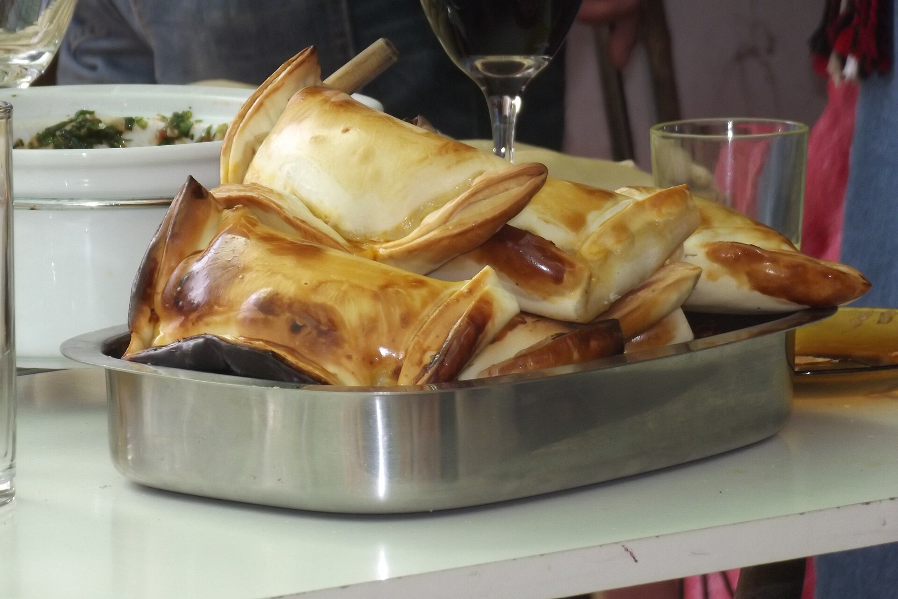

Prueba la auténtica comida chilena
Explorar
0
No encontramos coincidencias
Prueba con otro nombre o quita uno de los filtros activos.

Acerca de esta guía
Fotografía 1 de 4
El directorio reúne establecimientos identificados mediante fuentes institucionales, municipales, gastronómicas y comerciales. “Activa” indica una señal pública reciente; no equivale a una certificación sanitaria o comercial.
Cuando un dato no pudo verificarse, la ficha lo señala de forma explícita. Los rangos de precio visibles en esta versión son datos simulados para evaluar el prototipo; no provienen de la fuente del directorio.